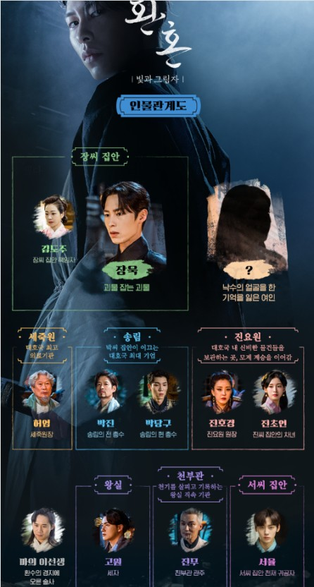

환혼3: 빛과 그림자
등장인물

장욱- 왕의 운명을 타고난 제왕성을 타고난 사람으로 말을 안 듣는 장난꾸러기 도련님으로 시즌1에 나왔었고 무덕이를 진심으로 좋아게 되었지만 무덕이 손에 죽었고 기적적으로 다 살아났다. 시즌2에서는장꾸미는 다 던져버리고 다크미 가득한 모습을 보이며 죽음 끝에서 살아와 괴물을 잡는 괴물이 되었다.
낙수- 무덕이의 몸 + 조영의 혼을 가진 무덕이와 장욱의 이야기는 시즌1에서 끝났고 무덕이가 욱이를 찌르고 대경호에 몸을 던졌는데 누군가 그녀를 호수에서 끌어올려 살려내면서 끝났었다. 그리고 시즌2에 나타난 낙수는 기억을 모두 잃었다